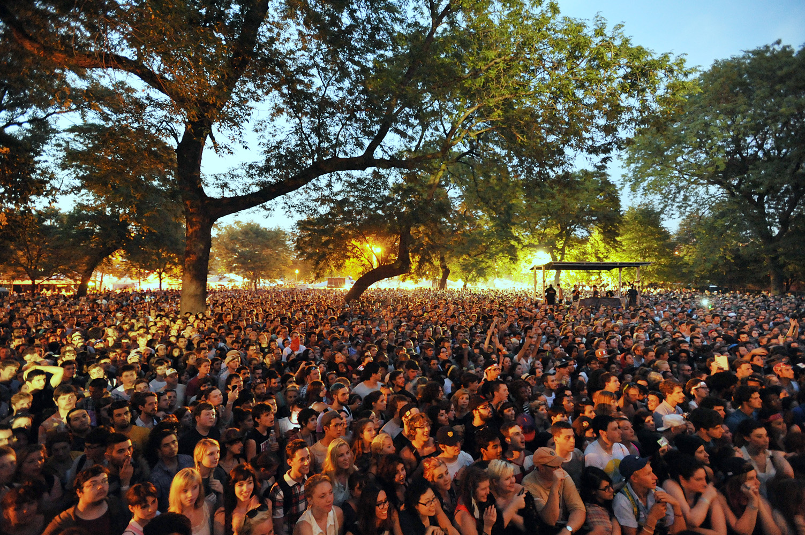

SUNSPLASH MUSIC FESTIVAL
|
About Event The Sunsplash Music Festival is a saturday music Festival, organised by the Bedford council for the all, especially residents of Bedford. Sunsplash Music Festival is a family-friendly type of festival which will take place every year in July. The day of the Festival is the 15th of July and the avenue is the Mowsbury Park, Bedford. The Festival's main aim is to showcase the best acts and musicians, then it also has an aim of saving our environment. This means, there must be a minimal effect on the environment. |
 |
All four main artist that are going to be present on the day are all very passionate about the environment. We hope this Festival would impact on all positively for the love of music and living a very healthy environment.
ID NEEDED
THE ENTRANCE
ID would be checked when entering the Festival. This is being done to ensure the safety of everyone.
BUYING ALCOHOL
A challenge 21 policy will be in place for all alcohol and tobacco sales on site.
If you look under 21, we will need ID from you or we cannot sell you an alcohol drink.
EMERGENCY
In case of any emergency, like child lost or any other type of emergency, the ID would be needed for prove or identification.
RECOGNITION OF ID
The only accepted proof of age documents are:
Passport (not a photocopy, must be valid)
Photocard Driving License (inc. provisional)
Proof Of Age Card – the card must be part of the PASS scheme and carry their hologram.
Northern Ireland Electoral Identity Card
WHAT TO BRING/WHAT NOT TO BRING
THINGS TO REMEMBER
- Your ticket
- Travelcard
- Clothes for any weather eventuality - hat, sunglasses, rainwear, warm clothing, Sunscreen
- Bring enough cash or your card (somewhere to keep it safe) – There are many cash machines on site, all which accept all UK debit cards. A fee will be charged to use the machines internationally.
- Bring ID
- Check out the latest weather before you leave
DO NOT BRING
- Illegal substances & legal highs (inc. nitrous oxide)
- Alcohol
- Offensive weapons or anything that may be considered offensive.
- Pyrotechnics or fireworks; distress flares & flares; smoke bombs.
- Laser pens
- Tables; chairs of any sort, including stools, floor seating and shooting sticks; gazebos and parasols
- Barbecues or any kind of cooking apparatus.
- Large (golf) umbrellas.
- Bicycles, scooters, skates
FOOD & DRINK
You can take snacks and soft drinks into the festival for your own consumption provided that
any soft drinks are held in unopened and sealed plastic or paper containers with a capacity of 500ml or less.
If you are bringing snacks and soft drinks, please do so in a carrier bag or small rucksack.
*Please don’t bring any alcohol or glass containers/bottles of any sort.
There are various restaurants and shops at the site, providing services to you.
Look at the the location page for locations of these facilities
Sunsplash also organised food stands, where food and drinks can be bought at a very affordable prize.
Sponsors like coke and others would also have their stands, proving you with all kinds of soft drinks.
SECURITY
We would implement a number of new security initiatives at Sunsplash Festival including:
Security teams using separate security and stewarding companies for the perimeter, arena, backstage and offsite security.
Visible security presence on the perimeter and entrances from the festival on site build,
and onwards, the security coordinators will oversee and manage all relevant companies and any operational activity.
Sunsplash Festival have a pre-agreed eviction policy with the police in place.
Please note everyone attending the event will be required to pass through airport style metal detectors and undergo body
and bag searches as a condition of entry. We reserve the right to refuse admittance to any person who refuses to be
searched by a steward or other person acting on their behalf. Please be advised that you may have to queue upon entry
so we ask that you are patient. These plans are in place to ensure everyone has a safe and enjoyable event.
STAYING GREEN
We hope you love Mowsbury Park as much as we do and want to help us keep it one of Bedford's favourite green spaces.
We are dedicated to reducing the environmental impact of the festival and need your help to make it happen.
Travel
It will be very convenient to travel with public trasport. this is because makes up ¾ of the total carbon emissions
generated to our environment.
Waste
At the site, there are alot of bins all around the place. Each bin is been divided into three
sections to help with recycling and compositing. There is a section for all glass, which would be needed for glass bottles.
Then the one for cans, the one for plastic and the one for paper. There are also compost bins, here food scraps and leftovers
can be thrown.
*Please watch the type of bin before dumping.
BIN YOUR BUTTS
Every butt has to be picked up by hand, so it would be awesome if you did not flick your cigarette.
WATER
Water is free. Please feel free to refill your water bottle at the taps provided.
RESIDENTS CONTACT INFO
The Sunsplash Festival is mainly dedicated to the residents of Bedford. The Festival has an aim to have positive impact
on the local community since the festival was organised in the name of the community. It is a Family-friendly event and we thank
the residents of Mowsbury Park for your ongoing support. Residents are allowed to be informed about anything regarding the festival.
All festival goers should respect the surrounding area, as well as the use of all the facilities on site.
NOISE
We work closely with independent consultants and the local authority to manage sound levels and meet licensing requirements.
We conduct a noise impact assessment of the surrounding area and use modern sound systems to reduce noise impact.
CONTACT US
INFORMATION AND GENERAL ENQUIRIES
info@sunsplash.co.uk
TICKET ENQUIRIES
tickets@sunplash.co.uk
PRESS & MEDIA
For any press enquiries, please email: sunplash@gmial.com
Or Contact: 0766662891/ 0281478101
ADVERTISING OR SPONSORSHIP ENQUIRIES
For any advertising or sponsorship enquiries please email: sunplashorg@gmail.com
Or Contact: 0276793786
CATERING TRADERS
For any press enquiries, please email: sunplash@gmial.com
Or Contact: 0766662891/ 0281478101
FESTIVAL PHOTOGRAPHY
For any press enquiries, please email: sunplash@gmial.com
Or Contact: 0766662891/ 0281478101
OTHERS
For other information or help, please 0207174706/ 0200727654
THANK YOU!
ALL COMMENTS CAN ALSO BE LEFT DOWN HERE,IN THE COMMENT SECTION. THIS WOULD HELP WITH IMPROVEMENT NEXT YEAR. THANK YOU!